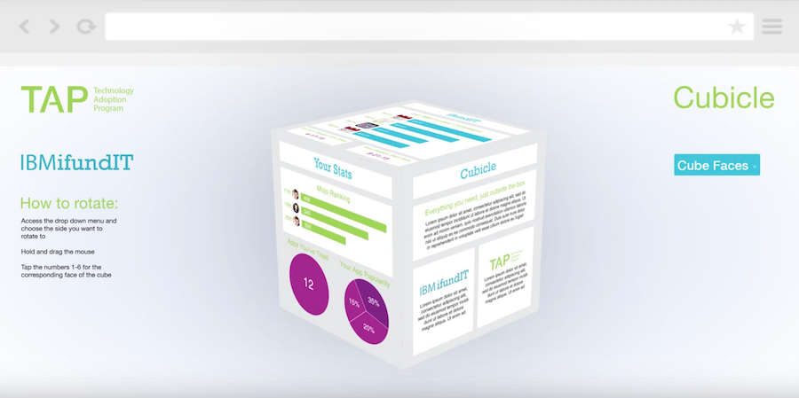

IBM's TAP and iFundIT work in tandem to introduce, nurture, and develop employee driven inventions and initiatives. TAP is designed to enable and support across-organizational, bottom-up, opt-in, community-oriented approach toward generating value. ifundIT is an enterprise crowd funding initiative which encourages and enables employees to come forward with innovative ideas and get them funded for implementation using the wisdom of the crowd. While these programs lead the field in corporate employee engagement, their websites were outdated and adoption wasn't progressing as expected. As a result, a website redesign and marketing plan were developed. A platform, deemed "The Cube", was ideated and iterated until it met IBM executive specifications and expectations. The Cube serves as a single central hub for everything relating to IBM's premier innovation platforms.